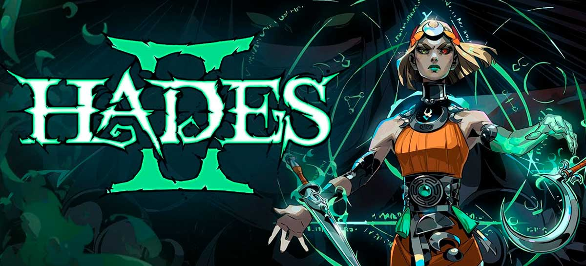

DESTAQUES
Hades II tem lançamento surpresa no PC
06 - Maio - 2024
Hades 2 teve um lançamento surpresa no PC via Steam e Epic Games Store, mas ainda não há notícias sobre sua versão para consoles. O título está disponível via acesso antecipado, ou seja, o game pode ser baixado pelo público antes de estar finalizado, sendo possível comprar o jogo pelo preço de R$ 88,99 para curtir e receber atualizações conforme o título é desenvolvido. dificuldade e muitas fases. Veja, a seguir, tudo sobre o novo game da franquia Anunciado em 2022, durante o evento The Game Awards, Hades 2 é um jogo de ação com jogabilidade roguelike, ou seja, leva você de volta ao início do caminho ao morrer. Além disso, o título, produzido pela Supergiant Games, promete bastante

Hades 2 é protagonizado por Melinoe, irmã de Zagreus, herói do primeiro jogo, e também filha de Hades. Em sua missão, Melinoe
quer derrotar Cronos, o Titã do Tempo, como uma forma de vingança e também para ajudar os deuses do Olimpo. A história se passa
pouco tempo depois do jogo original e traz algumas referências em seu enredo.
Em Hades 2 Melinoe, assim como Zagreus, encontra vários outros deuses do Olimpo em sua aventura. É possível interagir com as
divindades para ganhar seus favores, e assim fortalecer a heroína para os combates que virão pela frente.
Hades 2, assim como o primeiro jogo, tem gameplay totalmente focada na ação e pancadaria. Melinoe entra em uma sala e precisa
eliminar todos os inimigos ali contidos para avançar à seguinte. Com o tempo, o jogador pode aprimorar suas habilidades.
Se morrer, ela ganha uma nova chance, mas precisa voltar todo o mapa, apenas preservando alguns poderes.
Hades 2 é também um roguelike, estilo de jogo bem peculiar focado na dificuldade e na repetição de fases. O game incentiva o
jogador a morrer várias vezes para melhorar, repetindo suas ações e aprimorando seu combate. O título também tem batalhas
contra chefões e muitos outros elementos que já haviam feito a fata do original.